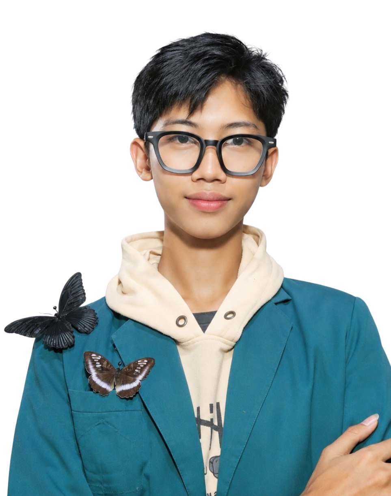
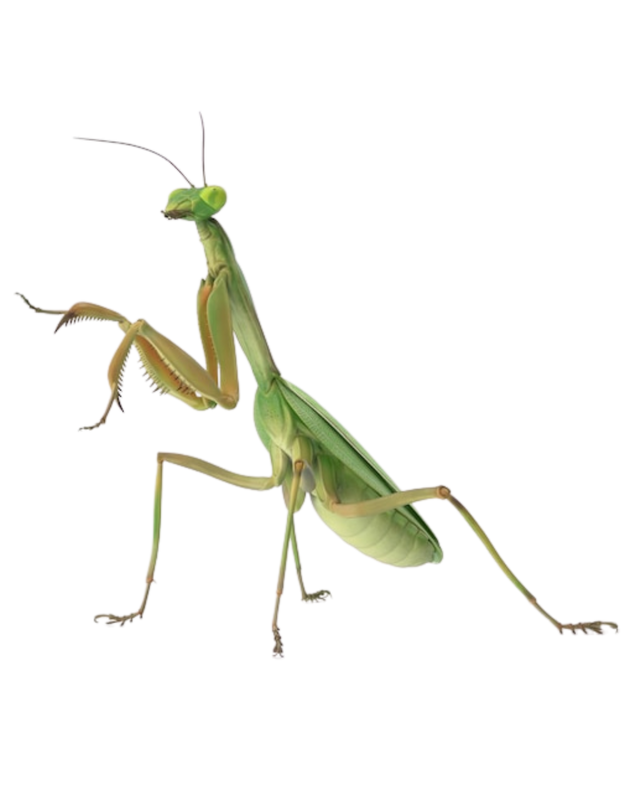
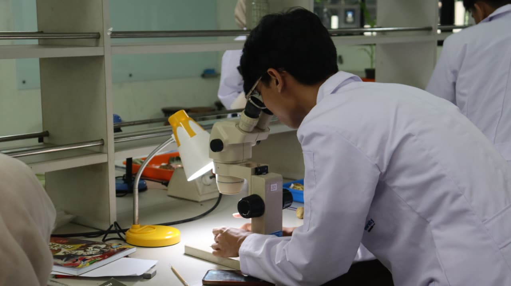
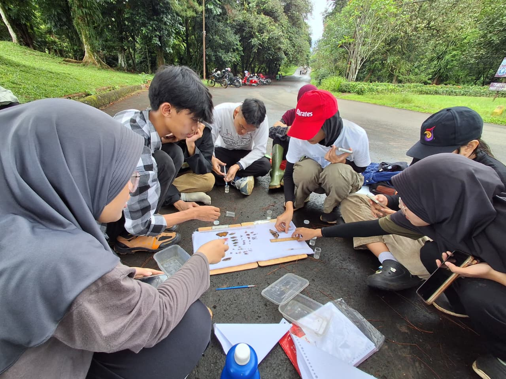
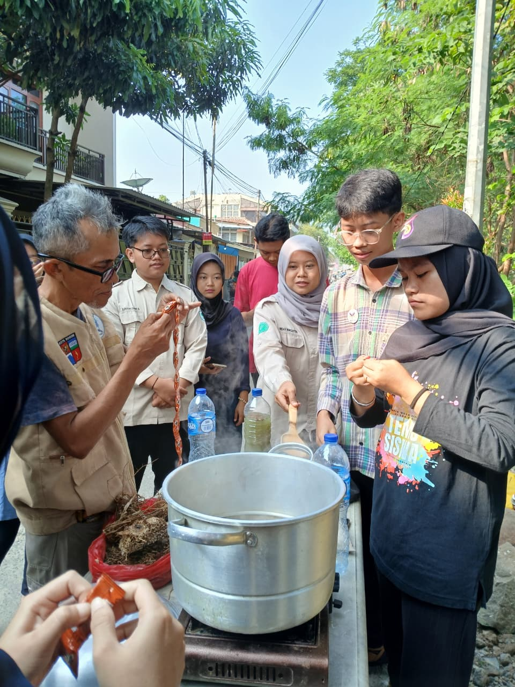
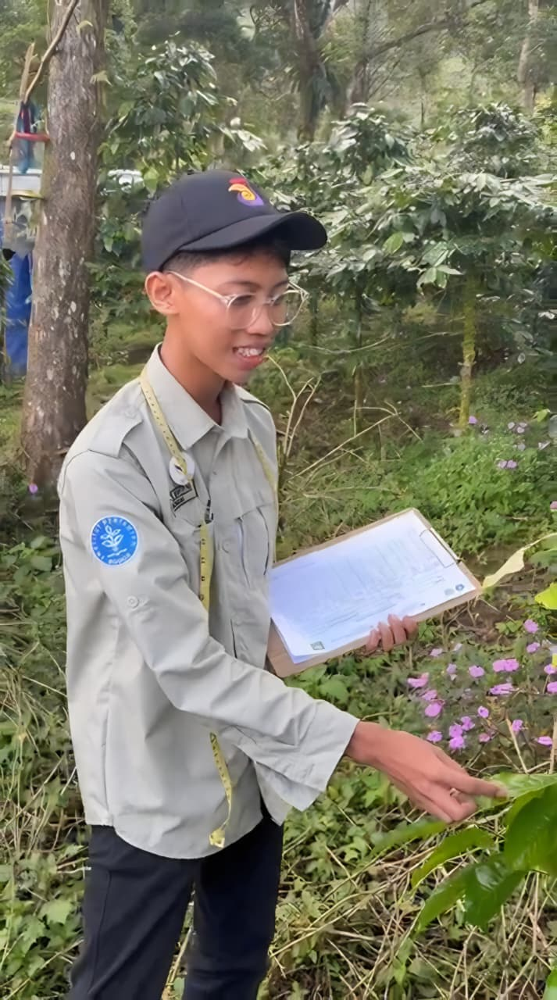

call me?
Halo, saya Bahtiyar. Menggabungkan ketertarikan pada sains hayati, pertanian, dan desain visual untuk menciptakan dampak yang bermakna.

Halo, saya Bahtiyar. Menggabungkan ketertarikan pada sains hayati, pertanian, dan desain visual untuk menciptakan dampak yang bermakna.
Mahasiswa semester 3 Departemen Proteksi Tanaman IPB yang berfokus pada pembelajaran, eksplorasi, dan inovasi. Tertarik pada kesehatan tanaman, penelitian, serta perpaduan antara sains, desain, dan teknologi untuk menciptakan solusi yang bermakna.

Warna, estetika, dan makna menjadi alasan saya mendalami dunia kreatif, menghadirkan karya visual yang tidak hanya memanjakan mata, tetapi juga mampu menyampaikan cerita dan meninggalkan kesan.

Setiap praktikum, pengamatan di laboratorium, hingga kegiatan di lapangan membuat saya semakin memahami bahwa tanaman memiliki cerita unik dan seru untuk dipelajari.
Dokumentasi jejak langkah dan kontribusi aktif mahasiswa dalam setiap kegiatan pengabdian serta inovasi ilmiah jurusan.

Merangkai formula media kultur jaringan untuk isolasi agen hayati di laboratorium.

Menyemai benih unggul hasil persilangan tahan penyakit blas skala masal.

Melindungi komoditas tani warga desa binaan lewat sosialisasi fungisida organik.

Memamerkan prototype sistem deteksi hama berbasis sensor AI tingkat nasional.

Menyatukan solidaritas dan merekatkan kebersamaan lintas angkatan mahasiswa.
Mata Kuliah: Fitopatologi Dasar • 2025
Mata Kuliah: Pengendalian Hayati • 2025
Mata Kuliah: Bioteknologi Pertanian • 2026
"Penyakit karat daun yang disebabkan oleh jamur Hemileia vastatrix merupakan ancaman utama produksi kopi arabika. Penelitian akademik ini menganalisis tingkat keparahan penyakit (disease severity) di wilayah perkebunan Kembang, Jepara menggunakan metode sampling acak. Hasil riset menunjukkan korelasi kuat antara kelembaban tinggi (>85%) dengan laju infeksi sporulasi spora oranye tanaman..."
Format 9:16 — Optimasi konten visual untuk TikTok, Instagram Reels, dan YouTube Shorts.
Format 16:9 — Produksi video lanskap untuk YouTube, company profile, dan visual sinematik.


.jpg)